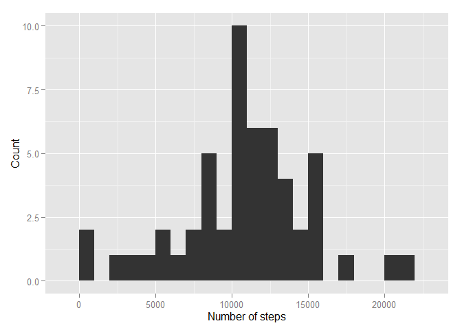
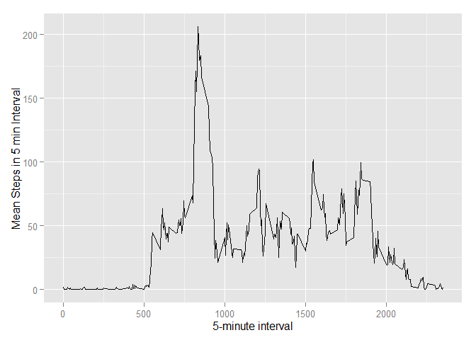
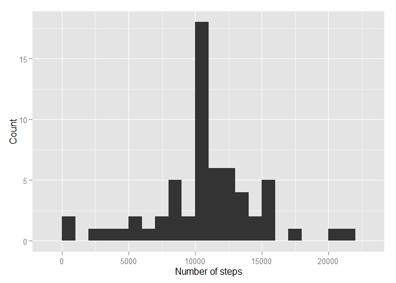
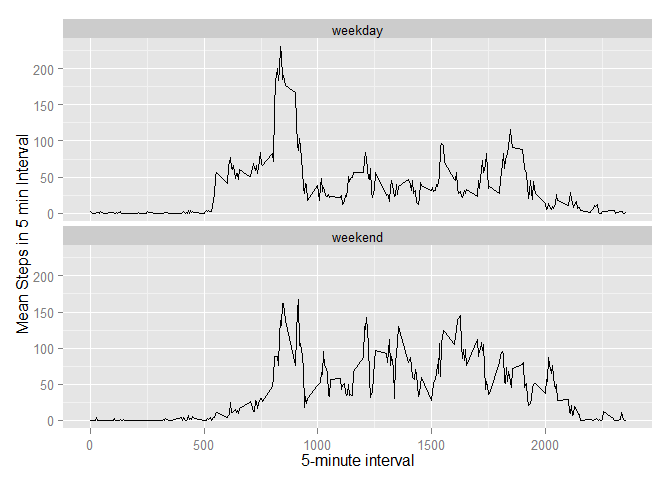

data <- read.csv(unz("activity.zip", "activity.csv"), na.strings = "NA", header = TRUE, colClasses = c("numeric", "Date", "numeric" ))
str(data)## 'data.frame': 17568 obs. of 3 variables:
## $ steps : num NA NA NA NA NA NA NA NA NA NA ...
## $ date : Date, format: "2012-10-01" "2012-10-01" ...
## $ interval: num 0 5 10 15 20 25 30 35 40 45 ...Follows an histogram representing the total number of steps perfomed in one day:
hist_data <- aggregate(steps ~ date , data, sum, na.rm = TRUE)
library(ggplot2)
qplot(hist_data$steps, binwidth = 1000) +
xlab("Number of steps") + ylab("Count")
The mean and meadian of steps taken per day is shown below:
mean(hist_data$steps)## [1] 10766median(hist_data$steps)## [1] 10765Here a time series plot of the 5-minute interval and the average number of steps taken, averaged across all days:
time_serie_mean <- aggregate(steps ~ interval , data, mean, na.rm = TRUE)
ggplot(time_serie_mean, aes(interval, steps)) + geom_line() +
xlab("5-minute interval") + ylab("Mean Steps in 5 min Interval")
5-minute Interval with the most steps in average is: 835.
uncomplete_rows <- sum(complete.cases(data) == FALSE)The number of row with NA is: 2304
NAs will be set equal to the mean of that 5-minute interval across the whole data set and stored in data2:
data2 <- data
data2[complete.cases(data2) == FALSE, c("steps")] <- time_serie_mean[sapply(data2[complete.cases(data2) == FALSE, c("interval")], function(x) which(time_serie_mean$interval==x)), c("steps")]
str(data2)## 'data.frame': 17568 obs. of 3 variables:
## $ steps : num 1.717 0.3396 0.1321 0.1509 0.0755 ...
## $ date : Date, format: "2012-10-01" "2012-10-01" ...
## $ interval: num 0 5 10 15 20 25 30 35 40 45 ...Follows an histogram representing the total number of steps perfomed in one day (after the NA correction):
hist_data2 <- aggregate(steps ~ date , data2, sum, na.rm = TRUE)
library(ggplot2)
qplot(hist_data2$steps, binwidth = 1000) +
xlab("Number of steps") + ylab("Count")
The mean and meadian of steps taken per day is shown below (NA correction applied:
mean(hist_data2$steps)## [1] 10766median(hist_data2$steps)## [1] 10766Differences shown in the plot below:
weekend <- factor(weekdays(data2$date) == "domenica" |
weekdays(data2$date) == "sabato",
levels = c("FALSE", "TRUE"), labels = c("weekday", "weekend"))
data2 <- cbind(data2, weekend)
time_serie_mean2 <- aggregate(steps ~ interval + weekend , data2, mean)
ggplot(time_serie_mean2, aes(x=interval, y=steps)) + geom_line() +
facet_wrap( ~ weekend, ncol=1) +
xlab("5-minute interval") + ylab("Mean Steps in 5 min Interval")